- About
- Diary
- People
- Events
- Reading
- Writing
- Meals
- Meetings
- Search

1829, Jan. Th.Mowbray, p. 80/2. Virgil, v. 227: Disowned, p. 58. Call on Northcote. L Ht marriede. 52 ½ / 55
2. F. Mowbray, p. 82/2. Virgil, v. 383: Disowned, p. 219. Museum; Sismondie: Mat tea. 51 / 53 ½
3. Sa.Mowbray, p. 84/2.Virgil, v. 566: Disowned, p. p. 256. Booth calls: Stratagem, 4/5e. Call on Bain. 50 / 51
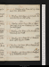Jan. 4. Su.Mowbray, çala. Horace, Sat. I, 5/2: Disowned, p. 384. Call on M W S. 50 / 51 ½
5. M. Mowbray, p. 86. Homer, Andromache: Disowned, Vol. II, p. 132. M W S at tea.Snow.49 / 51
6. Tu.Mowbray, 10 lines. Horace, Sat. I, 5: Segur, Campagne 1812, p. 132: Disowned, p. 171. Compose in bed, forget. 46 / 48
7. W.Mowbray, p. 87. Horace, Lib. II, Od. 7; Epod. 7, 4: Disowned, p. 341. W calls. 45 / 47 ½
8. Th. Mowbray, p. 87. Horace, Ep. I, 6: Disowned, Vol. III. Call on Hodgetsn, &Britton. 45 ½ / 47
9. F.Mowbray, p. 92/2. Horace, Sat. II, 6: Disowned, Vol. IV, p. 150. M W S at tea. 44 ½ / 48
10. Sa.Mowbray, çala. Horace, Epod. 16: Roubigné, p. 77: Disowned, p. 352, fin. 46 / 48
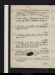Jan. 11. Su. Mowbray, p. 93/2. Horace, Od. I, 15; III, 21{:} Roubigné, p. 148: Udolpho, p. 64. Palace, St James’s Park, w. C Ce; meet C K: W dines. 45 / 46 ½
12. M.Horace, Epod. 1, 9: Roubigné, p. 204, fin. Theatre (RII; adv. B Aldis), Caswallon; adv. Spencere. 44 ½ / 47
13. Tu.Mowbray, çala. Udolpho, p. 85. M W S, Jane & Wdine; adv. Cts. 45 / 47 ½
14. W.Mowbray, 8 lines. Horace, Sat. II, 4/2: Udolpho, p. 205. 46 / 48 ½
15. Th.Mowbray, çala. Horace, Sat. II, 4: Udolpho, p. 296. Theatre, Nymph of Grotto; adv. Spencere. Whites call. Au lit, Irish name. 47 ½ / 49
16. F.Mowbray, p. 94/2. Horace, Od. I, 7:Joshua Wilson & Dr Phillips call: //tea Aldis’s, w. mrs Jones, Deacons, Penn & //Blunt. 45 ½ / 46 ½
17. Sa.C C, M S: Segur, p. 173: Udolpho, p. 356. Call on Northcote. 43 / 45
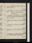Jan. 18. Su.Mowbray, p. 95/2. Horace, Sat. I, 2/2: Udolpho, p. 408. 42 / 43 ½
19. M. Mowbray, p. 96.Horace, v. 93. Dine at M W S’s. Anglesey embarks for Englande.Procidentia, parcee.42 /44
20. Tu.Mowbray, p. 97. Horace, Sat. I, 2:Aunt Margt’s Mirror.N G at tea; adv. W: sup at Reynolds’s, w. mr & mrs Boaden. 40 / 43 ½
21. W. Mowbray, p. 100/2. Horace, Sat. I, 3/2: Coxe, Walpole, çala. 41 / 43
22. Th. Mowbray, p. 101. Horace, v. 112: Udolpho, Vol. II, p. 34. 39 ½ / 43
23. F.Mowbray, p. 102. Horace, Sat. I, 3: Udolpho, p. 166. 37 / 38 ½
24. Sa.Mowbray, p. 103.Horace, Sat. I, 4/2: Udolpho, p. 335. Write to Kiddel. Call on Hodgets n. 35 ½ / 40 ½
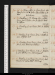Jan. 25. Su.Horace, Sat. I, 4: Segur, p. 194: Udolpho, p. 452; Vol. III, p. 89. Call on M W S, w. Uwins. W Shield dies.36 ½ / 39
26. M. Mowbray, p. 105/2. Horace, Sat. I, 7. M W S, Percy, Jane & W dine; adv. Cts & Uwins. Write to Sothren. 38 ½ / 46 ½
27. Tu. Mowbray, p. 105. Horace, Sat. I, 8: Udolpho, p. 200. 45 ½ / 51
28. W.Mowbray, p. 107/2. Horace, Sat. II, 1: Udolpho, p. 294. Colosseum, w. We. 46 ½ / 50
29. Th. Mowbray, p. 109. Horace, Od. III, 24: Udolpho, p. 384. Bohemian Brothers. 47 / 50
30. F. Mowbray, p. 111. Horace, Od. III, 6: Udolpho, p. 432; Vol. IV, p. 102. Call on Bryant n. 46 ½ / 52
31. Sa.Mowbray, p. 113. Horace, Od. I, 6, 31, 37: Udolpho, p. 216. Call on M W Sn: W &M sup. 47 / 49
Feb. 1. Su.Mowbray, p. 114. Horace, Od. II, 1; III, 25: Udolpho, p. 271. Call on C C, fr. Warnham. 46 / 47
2. M.Mowbray, 15 lines. Horace, Od. II, 6, 8. Udolpho, p. 290. M W S at tea. 42 ½ / 47 ½
3. Tu. Mowbray, p. 117. Horace, Od. I, 14, 15; II, 16: Udolpho, p. 335. Theatre, Widows Bewitchede. End of Vol. I. 41 / 47 ½
4. W. Delamere, Vol. II, p. 2. Horace, Od, II, 3: Udolpho, p. 408. Call on Colburn n & Northcote; adv. Ollier & Hazlit. 43 / 48
5. Th.Delamere, p. 4. Horace, Od. I, 2, 35. Call on Colburnn (Shoberl): theatre, Yelvae. Parliament meetse.47 ½ / 50
6. F.Delamere, p. 6/2. Horace, Od. II, 4: Matthew Wald, p. 125. 48 / 51 ½
7. Sa.Delamere, p. 8/2. Horace, Ep. I, 5, Epod. 14, Od. II, 12: M Wald, p. 181. Tea Woodifields, w. 30: call on Colburn. 50 / 53 ½
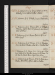Feb. 8. Su.Delamere, p. 9. Horace, Od. III, 26; IV, 11. M Wald, p. 226. Call on Brittonn: W dines.50 ½ / 53 ½
9. M. Delamere, p. 12/2. M Wald, p. 297.M W S at tea. 49 / 51 ½
10. Tu. Delamere, p. 13. Horace, Sat. I, 10. M Wald, p. 382, fin. Call on Rees (Longman’s); adv. Orme & Alex. Chalmers. 49 / 51
11. W.Delamere, p. 15. Horace, Epod. 15; Ep. I, 15. Call on Jacob. 49 ½ / 53 ½
12. Th. Delamere, p. 16. Horace, Od. I, 18. Museum; Chamberlainee: theatre, 1/2 Cha. XII, & Master’s Rivale. 51 ½ / 54
13. F. Delamere, p. 17/2. Horace, Od. I, 26, 29; II, 2: Reginard Dalton, p. 60. Rubber, Uwins’s, w. W, Drew, Fraser, Hunter, White, Vance & // 9: M W S at tea. 53 / 55
14. Sa. Delamere, p. 19/2. Horace, Od. III, 8. White dines: theatre, Recruiting Officere. Call on Britton. 52 ½ / 56
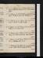Feb. 15. Su.Delamere, p. 20. Horace, Od. III, 14, 19. Dine at Hume’s, w. Perigal & miss De Berg: call on M W S. 53 ½ / 56 ½
16. M.Delamere, p. 21/2. Write to Wilson, Lincoln. Horace, Epod. 5: Recke, on Tirol, çala: R Dalton, p. 175. 54 ½ / 56 ½
17. Tu.Delamere, p. 22. Horace, Od. I, 24, 33, 36. Recke, on Verona. M at tea. W calls. 53 / 56
18. W. Delamere, p. 24/2. Horace, Od. II, 10; III, 29: R Dalton, p. 298. Hodgets calls n. 51 / 53
19. Th. Delamere, p. 25. Horace, Od. III, 15, 17: R Dalton, p. 346. M W S & N G at tea: call on Hodgetsn. 48 / 53
20. F.Delamere, p. 27/2. Horace, Epod. 17, 18; Od. I, 12; Ep. I, 9: R Dalton, Vol. II, p. 224. 51 ½ / 55 ½
21. Sa.Delamere, p. 29/2. Horace, Od. I, 19, 28. R Dalton, p. 343. Theatre, Peter the Great; adv. Bacone. 53 ½ / 56
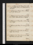Feb. 22. Su. Delamere, p. 31/2. Horace, Od. III, 5; Ep. I, 20: R Dalton, Vol. III, p. 256.Hudson calls: call on Bryant. 53 ½ / 55
23. M.Delamere, p. 31. Horace, Od. III, 4: R Dalton, p. 337, fin.M W S au soir. 51 / 54
24. Tu. Delamere, p. 34/2. Horace, Od. III, 27: Jac. Ortis, p. 22. Theatre, Pultava; adv. Spencer & Barhame. 48 / 50
25. W. Delamere, p. 35. Horace, Ep. I, 3; Od. III, 2. Museum; Maffeie. 47 / 50
26. Th. Delamere, çala. Horace, Od. I, 30; II, 9, 13. Minstrel. 46 ½ / 51
27. F.Delamere, p. 36. Horace, Ep. I, 8, 12. Museum; Maffeie. Call on Northcote. 49 ½ / 52
28. Sa. Delamere, p. 37/2. Horace, Od. II, 17; I, 20: Cobbet, Reformation, p. 86. Call on Tooke. 48 / 53 ½
Mar. 1. Su.Delamere, p. 38/2. Horace, Sat. II, 5/2: Cobbet, p. 130. M W S & Uwins call: dine at Bryant’s, w. mrs B & Charles. 45 / 47
2. M. Delamere, çala. Horace, Sat. II, 5: Cobbet, p. 208. P P & wife, & W dine; adv. Cts: sup at Reynolds’s. 43 ½ / 47
3. Tu.Horace, Od. IV, 12, 13; Ep. I.4: Cobbet, p. 252. Call on C Bryant: Hodgets calls n: Adelphi, Mallet, & Red Rovere. 45 / 48
4. W. Delamere, p. 40/2. Horace, Od. I, 3, 21; Ep. I, 4. Cobbet, p. 280.Sheffield Grace calls: sup at Hodgets’. 47 / 51
5. Th. Delamere, p. 40. Horace, Od. III, 1; IV, 1: Livy, &c, on Prospects. Pilchers dine; adv. Cts. & Hudson. Rheumatisme. Resolution on Ireland movede. 46 ½ / 52
6. F. Delamere, p. 41/2. Horace, Od. IV, 10; C Seculare. Write to Sheffield Grace. voted, 348 to 160e. 49 / 52 ½
7. Sa. Delamere, p. 42; Horace, Preface, p. 1. Horace, Od. I, 4.Theatre, Maid of Judah; adv. Poole, Barham & We. 50 ½ / 52 ½
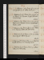Mar. 8. Su.Delamere, çala. Horace, Od. I, 5, 8, 9, 10: Promessi Sposi, p. 24. Call on Booth, w. C C. 50 ½ / 53 ½
9. M.Delamere, p. 43. Horace, Od. I, 11, 13, 22, 23, 25: P Sposi, p. 46. Museum; Maffeie: M W S calls: W Hopwood sups. 51 ½ / 54
10. Tu.Delamere, p. 45/2. Horace, Od. I, 27, 32, 34, 38: P Sposi, p. 54. Museum; Veronae. Burnet calls n: theatre, Caskete. 51 ½ / 57 ½
11. W.Delamere, çala. Horace, Od. II, 3, 5, 11: P Sposi, p. 72.Museume: Stable calls w C C: M W S at tea. 50 ½ / 53
12. Th.Delamere, p. 46. Horace, Od. II, 15, 18. Museum; Keyslere. Valerius, p. 140. 48 ½ / 52
13. F.Delamere, p. 48/2. Horace, Od. II, 19, 20.Museum; Barettie. Valerius, p. 311. Invent for Vol. III.48 ½ / 52
14. Sa.Delamere, p. 50. Horace, Od. III, 7, 9: Goldoni, Vita, p. 18. M W S at tea. 50 / 52 ½
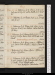Mar. 15. Su.Delamere, p. 53/2. Horace, Od. III, 10, 11: Valerius, Vol. II, p. 128. Call on Booth, w. C C: meet R T. 47 / 52
16. M. Delamere, p. 55. Horace, Od. III, 12, 13, 16: Valerius, p. 347. 47 / 54 ½
17. Tu.Delamere, p. 57/2. Horace, Od. III, 18, 20, 21, 22: Valerius, Vol. III, p. 123. W dines: call on Northcote; adv. King. 46 / 54 ½
18. W. Delamere, p. 58. Horace, Od. III, 23, 25, 28: Valerius, p. 312, fin. Uwins, Nokes & M W S call: meet Black. Second reading, 353 to 173e. 48 ½ / 56
19. Th. Delamere, p. 61. Horace, Od. IV, 3, 7. Elphin, p. 176. Call on Tooke: theatre, 1/2 Plume, & Sweet Homee. 54 ½ / 62
20. F. Delamere, p. 63. Horace, Epod. 2: Elphin, p. 240, fin. N G at tea. 59 / 62
21. Sa. Delamere, p. 64. Horace, Epod. 3, 6, 8: Cobbet, p. 336: Goldoni, p. 48. W Curran calls: theatre, 1/5 Townly, & Sixes:eHodgets calls n. Duel, Wellington & Winchelseae. 59 / 62
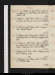Mar. 22. Su.Delamere, p. 66. Horace, Epod. 10, 11: Goldoni, p. 50: Last Man, p. 87. Mr & mrs Baxter call. 56 / 62
23. M. Delamere, 2 pp. Horace, Epod. 12, 13: Goldoni, p. 69: Last Man, p. 140: Byron’s Narrative. 56 / 62
24. Tu. Delamere, p. 69/2. Horace, Sat. I, 1: Byron, cala. Sup at Hodgets’. Frankenstein54 ½ / 60
25. W. Delamere, p. 71/2. Horace, Sat. I, 6/2: Pilot, p. 132. Sup at Reynolds’s, w. E & M Morton, S Boaden & Thomson. 51 / 59 ½
26. Th.Delamere, 1 1/2 pp. Horace, Sat. I, 6: Pilot, p. 188: Goldoni, p. 100. Lammin calls: call on Hudson & Hume: M W S & Jane dine; adv. Cts & White. 53 / 57
27. F.Delamere, p. 73/2. Horace, Sat. I, 6: Pilot, p. 268; Vol. II, p. 18. W Curran calls. Iliace. 52 / 59
28. Sa. Delamere, p. 75. Horace, Sat. I, 6: Pilot, p. 128. H Pilcher calls . 52 / 60
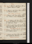Mar. 29. Su. Delamere, çala. Horace, Sat. I, 9. St James’s Park, w. C C: W calls. 54 / 57
30. M.Delamere, çala. Horace, Sat. II, 2/2: Pilot, p. 220. Museum; Baretti, &ce. Third reading, 320 to 142e. 54 / 56 ½
31. Tu. Delamere, çala. Horace, Sat. II, 2: Pilot, p. 342. Museum; Toscanae. Call on miss Woodifields. 53 / 55 ½
Apr. 1. W.Delamere, çala. Horace, Sat. II, 3, v. 60: Holcroft, çala: Pilot, Vol. III, p. 96. Museum; Toscanae . Call on Tooke: H P calls. 51 / 56
2. Th.Delamere, çala. Horace, Sat. II, 3, v. 103. Museum; consult Babere. M W S & Jane at tea; Baldwin w. M Je. Theatre, My Wifee.Second reading moved, Lordse.Snow. 50 ½ / 55
3. F.Delamere, çala. Horace, Sat. II, 3, v. 245: Sarsfield, Vol. I, II. Museum; Florencee . 50 ½ / 58
4. Sa. Delamere, çala. Horace, Sat. II, 3, fin: Sarsfield, Vol. III: Anglade, çala. M W S dines.Division, 217 to 112e.50 ½ / 58
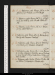Apr. 5. Su. Delamere, çala. Horace, Sat. II, 3: Confessions, p. 93: Pilot, p. 202. F Rn& Wcall. 55 ½ / 60 ½
6. M. Delamere, çala. Horace, Sat. II, 7/2: Confessions, p. 185: Pilot, p. 260.F R calls: Stahle & C C sup. 57 / 61
7. Tu.Delamere, çala. Horace, Sat. II, 7: Women, p. 179. Call on Panizzi. 56 ½ / 60 ½
8. W. Delamere, çala. Horace, Sat. II, 8/2: Women, p. 275; Vol. II, p. 138. Museum; Tiraboschie . 55 / 59
9. Th.Delamare, çala. Horace, Sat. II, 8: Women, p. 276; Vol. III, p. 177. Museum; Tiraboschie. 54 ½ / 58
10. F.Delamere, çala. Horace, Ep. I, 11, 14: Women, p. 404, fin. Museum; Tiraboschie: dine at Robinson’s, w. Carew, Barret, Holroyd, Todd, Blood & Simpson; adv. Power & M W S. 54 ½ / 59 ½
11. Sa.Delamere, çala. Sayings & Doings; Merton. Call on H B Kerna, & Panizzin: W Curran calls n. 56 / 60 ½
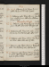Apr. 12. Su.Delamere, p. 76. Horace, Ep. I, 16: Goethe, Life, p. 90. M W S calls: W dines. 58 / 64 ½
13. M.Delamere, çala. Horace, Ep. I, 17: Fire Side, p. 94: Goethe, p. 233. Call on Kerr,Whitmore &Fenn, & Rodd. Emancipation Bill passede.60 ½ / 63 ½
14. Tu. Delamere, çala. Horace, Ep. I, 18: Fire Side, p. 323. F R calls: call on Tooke n: H P & Jane sup. 58 ½ / 64
15. W.Delamere, çala. Horace, Od. I, 1; Ep. I, 2: Fire Side, Vol. II, p. 336. Panizzi calls: call on Tooken. 59 ½ / 62 ½
16. Th. Delamere, çala. Horace, Od. IV, 2: Fire Side, p. 405: Vol. III. Call on Tooke; adv. miss Eaton. 58 / 61
17. F.Delamere, çala. Horace, Od. IV, 5, 9: Wordsworth, çala: Fire Side, Vol. IV, p. 347. M W S au soir. 57 ½ / 62 ½
18. Sa.Delamere, çala. Horace, Od. IV, 14: Fire Side, p. 500, fin. Call on P Smith: Percy dines: sup at Reynolds’s, w. Sophia & Stella. 58 ½ / 65
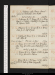Apr. 19. Su.Delamere, çala. Horace, Od. IV, 4: Lamb, on Shakespear: Cain. W calls. Easter.) Earl of Buchan dies.58 ½ / 63 ½
20. M.Delamere, p. 78. Horace, Ep. II, 2/2: Mirabeau, p. 16. Dinner, 2 Hudsons jeunes, 2 Cts, & Jane; adv. Cts, Hudson & M W S. 56 ½ / 61 ½
21. Tu. Delamere, p. 79. Horace, Ep. II, 2: Mirabeau, p. 56. Sup at Jacob’s.56 ½ / 62
22. W.Indisposede. Horace, Ep. II, 2: Mirabeau, p. 168. Call on W. Fever, 30 dayse.) Pluviose, 4 days. 57 / 59
23. Th. Horace, Od. I, 11; IV, 15; Ep. I, 13: Mirabeau, çala: Percy Anecdotes, çala. W dines; adv.N G, C C & Jane. Countess of Derby dies.56 ½ / 61
24. F. Horace, Ep. II, 1/2: Heaven & Earth: Don Juan, C. I: Percy Anecdotes. W dines. 57 ½ / 61 ½
25. Sa. Horace, Ep. II, 1: Don Juan, C. II, III. Call on Northcote, talks of Rome & Reynolds.Greek song; love56 ½ / 59
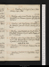Apr. 26. Su.Coup de Planche, 3 days . Horace, Ep. II, 1: Don Juan, C. IV. M W S at tea. 53 ½ / 58 ½
27. M.Horace, Od. I, 16: Childe Harold, C. I. Museum; Toscanae. 54 ½ / 59
28. Tu.Horace, Od. I, 17; II, 14: Don Juan, C. V. Museum; Toscanae. 54 / 56 ½
29. W. Horace, Od. III, 30; IV, 8: Don Juan, C. VI, VII.White calls; adv. C C. Iliace.52 ½ / 57 ½
30. Th. Horace, Ep. I, 1: 1/2 Manfred: Sadler, on Population, p. 58 + 38. M W S&W call. 52 ½ / 57
May 1. F. Horace, Ep. I, 7: Sadler, p. 106. Sup at Hodget’s, w. Kempson & Clancy. 54 ½ / 61
2. Sa.Horace, Ep. I, 10, 19: Sadler, p. 142. M W S at tea. Catullus, çala. 58 ½ / 63 ½
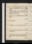May 3. Su. Delamere, p. 79/2. Horace, Ars Poetica, v. 201. Meet L K, T Ht, &c, w. C C: call on Booth, w. C C; adv. P Nicholson: W au soir. Catullus, çala. 59 ½ / 63
4. M. Rhume. Horace, v. 300. Exhibition; adv. Gent, mrs Booth & Cowley Bre: theatre, Massaniello; adv. Barhamse. 60 / 65 ½
5. Tu.Horace, v. 350: Catullus, Carm. 1 to 7. M W S at tea. 60 / 64
6. W. Catullus, Atys. 62 ½ / 65 ½
7. Th.Catullus, c. 10: Trial, Assault, Annesley.61 / 63
8. F. Horace, v. 476, fin: Sadler, p. 166: Two Lives, Vol. I. M W S calls n. 60 / 65 ½
9. Sa. Sadler, p. 218, & fin: Menzicoff, La Harpe. H Payne calls: call onL Kenney; adv. C Ravizzotti &F Ht. 61 ½ / 65 ½See May 22, 1810.
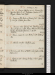May 10. Su.Homer, Odyssey, v. 105: Horace, fin: Two Lives, Vol. II, p. 117. Belgrave Square, w. C C: H Payne & W dine; adv. M W S. 63 ½ / 69 ½
11. M.Homer, v. 210 220: Wood on Homer, p. 65: Two Lives, p. 303, fin. Theatre, Jane Shoree. 63 ½ / 67
12. Tu. Homer, v. 387:Wood , p. 114. Meet Reynolds: dine at C Jones’s, w. Aldis, Strong, Williams (Foundling), Prestons,Preslands, Bannister, T Jones & 2; 3 au soir. 63 ½ / 67 ½
13. W.Homer, v. 440; II, v. 61: Wood, p. 148.M W S at tea. 62 ½ / 67
14. Th. Wood, p. 203, fin: Mitford, çala. 15, Edward Street 62 ½ / 67
15. F.Homer, çala. Dine at M W S’s; adv. Julia & E Robinson, & C C. 64 / 69
16. Sa.Homer, v. 128: Seneca, De Ira, c. 1 to 8. Call on Northcote. 64
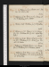May 17. Su.Delamere, p. 79. Homer, v. 176: Seneca, c. 16: Crevier, çala. 61 / 66
18. M. Delamere, p. 80: Homer, v. 269: Seneca, Lib. II, c. 8: Montorio, p. 65. 1/2 Peleus. 62 / 66
19. Tu.Homer, v. 348: Montorio, p. 273. N G at tea. 63 / 68
20. W. Delamere, p. 81. Homer, v. 434: Seneca, Ep. 1 to 4: Montorio, Vol. II, p. 214. Sup at Reynolds’s. 64 ½ / 70
21. Th.Delamere, p. 82. Homer, Lib. III, v. 101: Seneca, Ep. 5: Montorio, p. 274; Vol. III, p. 93. Theatre, La Frondee. 66 / 70 ½
22. F.Delamere, p. 84/2 (2 pp.)Homer, v. 183: Seneca, Ep. 6, 7: Montorio, p. 210. Museum; Toscanae. 62 ½ / 69
23. Sa. Delamere, p. 85/2. Homer, v. 220: Seneca, Ep. 8, 9, 10: Montorio, p. 238: Anne of Geirstein, p. 61. M W S at tea. 66 / 71 ½
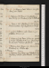May 24. Su. Delamere, p. //85. Homer, v. 300: Geirstein, p. 285. W dines. 67 ½ / 64
25. M.Delamere, p. 87/2. Homer, v. 370: Geirstein, p. 336; Vol. II, p. 174: Montorio, p. 276. Isa. Booth calls. 62 ½ / 65
26. Tu. Homer, v. 440: Geirstein, p. 346. Sydney, & Pandemonium, w. M Je: Hodgets, Uwins & Cts sup. 61 ½ / 65 ½
27. W. Goularde. Delamere, çala. Homer, v. 497: Geirestein, Vol. III, p. 294. 63 / 68
28. Th.Delamere, p. 87.Homer, Lib. IV, v. 85: Geirstein, p. 381, fin: Montorio, Vol. IV, p. 72. Call on C Jones n: theatre, Suspics Husband; adv. Spencere. 64 ½ / 70
29. F.Delamere, p. 88. Homer, v. 154:Seneca, Ep. 11: Montorio, p. 127. H Pilcher sups. Sir H Davy dies )Deorsume. 64 / 67
30. Sa.Delamere, p. 89/ 2. Homer, v. 215: Blackwel, p. 48: Montorio, p. 283, fin. Call on H Marshal. Seneca, Ep. 12. 63 / 65
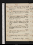May 31. // Su.Delamere, p. 89. Homer, v. 265:BlBlackwel, p. 164.Meet C Bryant: New London Bridge, w. C C. 60 ½ / 66
June 1. M. Delamere, p. 90/2. Homer, v. 335: Blackwel, p. 224. Museum; M W Se: dine at M W S’s; adv. 3 Cts. 64 / 66
2. Tu. Homer, v. 403: Catullus, c. 11 to 16: Blackwel, p. 4346, fin. Museum; De la Prymee: meet Batty: Aldis & C Jones call. 63 ½ / 70
3. W. Homer, v. 480: Pope, Prefaces, pp. 47. Call on Colburn n & Northcote. Museum; speak w. Forshalle. 68 / 75 ½
4. Th.Delamere, p. 90. Write to Wainwright. Homer, v. 39 570: Nairs, çala. M &W call: call on Colburn n: 70 ½ / 72
5. F.Homer, v. 640: V Grey, Vol. III, p. 70. Call on M W S; adv. Julia & L R. 68 / 69 ½ / 66
6. Sa.Delamere, p. 91/2. Homer, v. 720: V Grey, p. 270. Lord Thurlow dies (lately). 64 / 66 ½
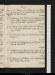June 7. Su. Delamere, p. 91. Homer, v. 794: V Grey, p. 333; Vol. IV, p. 140. Call on Booth, w. C C; & on M W S; adv. Julia & Booths.Whitsunday.60 ½ / 65 ½
8. M. Delamere, p. 93/2. Homer, v. 847: V Grey, p. 256. Call on Colburn: theatre, 1/3 German Freischutz, & Spoiled Child; adv. R R & Maddison Me. 62 ½ / 66
9. Tu.Delamere, p. 94/2. Homer, Lib. V, v. 74: V Grey, p. 320. Sothrens& Coplands call: call on Orme (Longman’s) & M W S. 62 / 65 ½
10. W. Homer, v. 144: V Grey, p. 362; Vol. V, p. 90: Magic Ring, p. 101. 62 ½ / 66
11. Th. Delamere, p. 95. Homer, v. 214. V Grey, p. 276. Mcalls: call on Booth. 63 ½ / 68
12. F.Delamere, p. 96. Homer, v. 257: V Grey, p. 324, fin. Ancient Masterse: sup at Reynolds’s:H P calls. 65 / 70
13. Sa. Delamere, p. 38/2. Homer, v. 312: Confessions, J J R, çala: Magic Ring, p. 209. 67 / 73 ½
June 14. Su.Delamere, çala. Homer, v. 381: Confessions, çala: Julie, do. Mrs Hamilton &Hudson call: W dines: call on M W S; adv. Julia. 69 / 74 ½
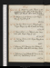15. M. Delamere, p. 98. Homer, v. 431: Magic Ring, p. 319; Vol. II, p. 61. 68 ½ / 72
16. Tu.Dies Iræ. Homer, v. 493: Schlegel, çala: Magic Ring, p. 119. Sup at Jacob’s; adv. Dendy. 67 / 67 ½ / 66
17. W.Homer, Lib. VI, v. 95: Schelegel, çala: Timon. White calls. Magic Ring, p. 144. 64 / 67 ½ / 66
18. Th.Nervouse. Homer, v. 185: Magic Ring, p. 252. Call on Northcote. 64 / 68
19. F.Delamere, p. 100/2. Homer, v. 261: M Ring, p. 344. N G at tea: call on M W S; adv. Percy: W sups. 65 / 67 ½
20. Sa. Delamere, p. 100 (Eudocia lost). Homer, v. 331; Lib. VII, v. 47: Pilot, Vol. III, p. 1 to 213. 66 ½ / 70 ½
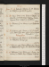June 21. Su. Headache. Delamere, p. 101. Homer, v. 100: Pilot, p. 303, fin. W & Percy dine. 69 ½ / 70 ½
22. M.Rain. Homer, v. 132: Visions of T I Martin. For Isleworth, w. M J & Cts: Turner’s Drawingse: theatre, Beggar’s Opera, & Lodgings for Gentlemene. 68 / 69
23. Tu.Delamere, p. 102. Homer, v. 200: Walladmor, Vol. I. Terry 68 / 71
24. W.Delamere, çala. Homer, v. 274: Melmoth, çala. M W S & Jane dine: call on Hudson, Royal S. shipwreck, C. I.Prorogatione.69 / 72
25. Th. Delamere, çala. Homer, v. 347: Red Rover, çala: Walladmor, Vol. II, p. 190. 69 / 73 ½
26. F.Delamere, çala. Homer, Lib. VIII, v. 96: Crusoe, p. 66: Walladmor, p. 311, fin. Mrs Hamilton & Cts sup. 70 / 72
27. Sa.Delamere, p. 103. Homer, v. 157: Byron, Commodore, p. 70. Theatre, Ways & Means, & 1/2 Padlocke. 69 ½ / 71
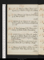June 28. Su. Delamere, 1/2 page. Homer, v. 235: Byron, p. 92: Humane Society, No. 55. W dines. 69 / 70
29. M.Rain. Homer, v. 294: Byron, p. 115 fin: Crusoe, p. 102. Dine at M W S’s. 67 ½ / 68
30. Tu. Delamere, p. 105. Homer, v. 371: Crusoe, p. 138. Percy dines; adv. W:Hudson & T Ht at tea: M & C C sup. 65 / 68
July 1. W.Rain. Delamere, p. 106/2. Homer, v. 445: Crusoe, p. 178.W calls: theatre, Manoeuvringe. 66 / 68
2. Th.Goularde. Homer, v. 515: Shipwreck, Canto II: Crusoe, p. 200.W dines: theatre, Sister of Charity, & Middle Temple; adv. Gent & Talfourde. Museum; Crabb, Dictionary.e 66 / 68 ½
3. F. Delamere, çala. Homer, v. 586: Crusoe, p. 254. Call on Hudson, R S: meet Hippisley: H P calls. Nervouse) 65 / 68 ½
4. Sa.Delamere, p. 106. Homer, Lib. IX, v. 73: Crusoe, p. 271, fin: Magic Ring, Vol. III, p. 203. 64 / 67 ½
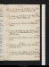July 5. Su. Delamere, p. 108/2. Homer, v. 145: Magic Ring, p. 256. Index to History, 2 pp. 63 / 67
6. M.Delamere, p. 109/2. Homer, v. 211: Magic Ring, p. 332, fin. Index to History, 2 pp. 64 / 68
7. Tu. Delamere, p. 110. Homer, v. 286. M W S at tea:W dines. 65 / 66 ½
8. W. Head-achee. Delamere, 1/2 page. Homer, v. 359: Shipwreck, C. III. Call on Rees (Longman’s): theatre, All in the Wronge. 65 ½ / 69
9. Th.Delamere, p. 111. Homer, v. 424: Devereux, p. 165. Deorsume.66 / 68
10. F.Delamere, çala. Homer, v. 492: Devereux, p. 299; Vol. II, p. 70. 65 / 67
11. Sa.Delamere, p. 113. Homer, v. 566: Devereux, p. 186. Dine at M W S’s; adv. F Reynolds, Jane & W. 65 ½ / 66 ½
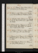July 12. Su. Delamere, 5 lines. Homer, Lib. X, v. 75: Devereux, p. 310; Vol. III, p. 133. 65 / 67 ½
13. M.Delamere, revise. Homer, v. 147: Devereux, p. 240. Dine at Hume’s, w. 5 Hollands; invité W. 66 / 68
14. Tu. Delamere, revise. Homer, v. 220: Devereux, p. 344, fin. Percy & Julian dine: call on Northcote: W calls. 67 / 70
15. W. Delamere, p. 114. Homer, v. 301. Write to Wilson, Lincoln. Call on Walker: mrs Hamilton dines: theatre, Robber’s Bridee. 67 / 70 ½
16. Th. Indisposede. Delamere, 10 lines. Homer, v. 377.M W S & Jane dine; adv. H P, W & Cts. 67 / 70 ½
17. F.Delamere, p. 116. Homer, v. 455: Bolingbroke to Windham, pp. 312. Sup at Reynolds’s, w. Thomson Luttrel. 66 / 67
18. Sa. Expect Grayson. Homer, v. 515: Pelham, p. 92: Life of Bolingbroke, p. 90. 66 / 68
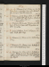July 19. Su.Delamere, p. 117. Homer, v. 574: Pelham, p. 227: Tyrannic Love, act 1. Uwins & fille, W & mrs Hamiltonensemble. 66 ½ / 70
20. M. Delamere, p. 118. Homer, Lib. XI, v. 70: Pelham, p. 339. White &H Pn call: theatre, 1/2 Charity, 3/4 Incoge. Tyrannic Love, acts 2, 3. End of Vol. II.65 / 69
21. Tu. Delamere, Vol. III, çala. Homer, v. 144: Pelham, Vol. II, p. 121. Jane calls: Percy dines; adv. M W S: N G at tea. 65 / 71
22. W. Goularde. Pelham, p. 316: Antiquary, Vol. I, çala. Booth calls: W sups. 68 / 79
23. Th.Delamere, p. 2/2. Homer, v. 233: Simple Story, p. 169. 69 / 70
24. F.Delamere, p. 3. Homer, v. 303: Inchbald, p. 228: Pelham, // Vol. III, p. 206. 68 / 72
25. Sa. Delamere, p. 5. Homer, p. 375: Inchbald, p. 320, fin: Pelham, p. 254. Dine at Woodifield, w. capt. Symmons, & mrs Burke & fille; adv. W Hastings Angelo. 69 ½ / 71 ½
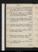July 26. Su.Delamere, p. 7: On Employment of Time, 1 page. Homer, v. 452: Pelham, p. 366, fin: A Cunningham, çala. Anecdotical walk w. C C. 66 / 64 ½
27. M. Delamere, p. 9/2. Homer, v. 502: Cunninghm, çala. Write to F R.Call on Hudson, R S—& Denley: theatre, Charles XII; adv. John Boadene. 63 / 65 ½
28. Tu. Delamere, p. 10. Write to Hudson, R S. Homer, v. 566: Seneca, Trag., cala. M W S, Percy & Jane dine. 64 / 68
29. W.Delamere, p. 12. Homer, v. 639: Pelham, çala. Call on F R n: theatre, 3/4 Cha. XII, & Happiest Daye. 65 ½ / 67
30. Th. Delamere, p. 13. Homer, Lib. XII, v. 72: Elia, çala. W calls n: call on Northcote. 65 / 69
31. F.Delamere, p. 15/2. Homer, v. 110. Call on Slater: dine at M W S’s; adv. H Payne: W calls n. 63 ½ / 65
Aug. 1. Sa. Fatiguee. Homer, v. 207: De Vere, p. 70. Gent calls: W au soir. 63 / 68
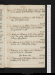Aug. 2. Su.Delamere, p. 17/2. Homer, v. 293: De Vere, p. 167. F R calls: meet Bannister & T P Cooke: W dines. 65 ½ / 70
3. M.Delamere, p. 18. Homer, v. 388: De Vere, p. 289: Cunningham, çala. 67 ½ / 68
4. Tu.Delamere, p. 20, optime. Homer, v. 453: De Vere, p. 343: Cunningham, çala. Museum; Lives of Novelistse: W calls. 65 / 66
5. W. Indisposede. Delamere, p. 22/2. Homer, Lib. XIII, v. 85: Elia, çala. Call on Hudson, R S: theatre, Nothing Superfluouse. 63 ½ / 67
6. Th.Delamere, p. 23. Homer, v. 127: Emilius in ye World, p. 145. M W S at tea:W sups. 64 ½ / 66
7. F.Delamere, p. 24. Homer, v. 216: Emilius, p. 295; Vol. II, p. 174. Museume. John Reeves dies.66 / 68 ½
8. Sa. Delamere, p. 26, Borromeo. Homer, v. 310: Reprobate, p. 218. W au soir. 66 ½ / 73
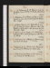Aug. 9. Su.Delamere, p. 28. Homer, v. 440: Reprobate, p. 334; Vol. II, p. 76.W calls: call on Booth, w. C C. 68 / 70 ½
10. M. Delamere, p. 30. Homer, Lib. XIV, v. 79: Reprobate, p. 234: Bourru Bienfaisant: Werter, Vol. I. W calls. 67 ½ / 69 ½
11. Tu.Untunee. Homer, v. 147: Reprobate, p. 300, fin: Emilius, p. 268, fin. Museum, E Reve: W & M calls: tea Woodifield’s, w. capt. Symmons, mrs Burke & fille, & two. 65 / 70
12. W.Delamere, p. 32/2. Homer, v. 215: Werter, Vol. II. Museum, E Reve: Gent& Jerningham> call: theatre, Witnesse. 66 ½ / 69 ½
13. Th. Delamere, p. 32. Letter for C C. Homer, v. 291: Manon, p. 60. W sups.to Murray.68 / 71
14. F.Delamere, p. 34. Homer, v. 417: Manon, p. 154; Pe II, p. 71.M W S au soir: Uwins at tea. 67 ½ / 69
15. Sa.Delamere, p. 36. Homer, v. 485: Manon, p. 126; Pe III, p. 46: Inesilla, p. 122. 63 ½ / 66
Aug. 16. Su.Giddinesse. Delamere, 11 lines. Homer, v. 533: Manon, p. 138: Inesilla, p. 202, fin. 63 / 67 ½
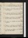17. M. Delamere, çala.Homer, Lib. XV, v. 110: Manon, Pe IV, p. 50. 62 / 67
18. Tu.Delamere, çala. Homer, v. 181: Udolpho, çala. Theatre, Spring Locke: adv. W, Barham & Poole. 63 ½ / 66 ½
19. W.Delamere, çala. Homer, v. 288: Udolpho, çala. N G at tea: M W S do; adv. A Curran, W & C C. 65 / 69
20. Th. Homer, v. 360: Udolpho, çala. Call on Colburnn & Northcote. 64 / 66
21. F.Delamere, çala. Homer, v. 438: Rinaldini, Vol. I. Call on Colburn n: theatre, Miser, & 1/3 Ups & Downse. 63 / 66 ½
22. Sa.Delamere, çala. Homer, v. 556: Rinaldini, Vols II & III. Call on Colburn. 63 / 64 ½
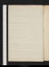XXIXBulwer born 1804
Aug. 23. Su. Delamere, 4 lines. Homer, Lib. XVI, v. 81: Rinaldini, Vol. & half. W calls. 64 / 67 ½
24. M. Delamere, p. 38. Homer, v. 171: Monk, çala. Museum; Robinhoode. Expect Colburn. 65 / 66 ½
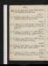25. Tu. Delamere, p. 40. Homer, v. 240. Museum; R Hde. dine at Jerningham’s, w. Gent, Hargrave, Cook, Slaughter, & 1. 62 / 65 ½
26. W.Delamere, p. 41. Homer, v. 312. Call on Colburnn: M W S at tea; adv. N G & W: theatre, 1/2 Hypocrite, & Mr Coole. 61 / 63 ½
27. Th. Delamere, p. 42. Homer, v. 392. Colburn calls: call on Hudson, R S: theatre, Der Vampyre. 63 ½ / 66
28. F.Delamere, p. 44/2. Homer, v. 481. Museum; Rinaldinie. Cooke, N C, calls n: ncall on A Currann. 62 / 64
29. Sa.Delamere, p. 45/2. Homer, Lib. XVII, v. 76: Nollekens, çala. Seek Polidori & Magnani: A Curran au soir. 62 / 66
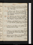Aug. 30. Su.Delamere, çala. Homer, v. 150: Rinaldini, çala: Nollekens, çala. WCooke, N Ct calls: W sups. M W S at tea. 63 / 66
31. M.Delamere, çala. Homer, v. 220: Rinaldini, çala: Robbers, act 1, 2. Meet Mackintosh: call on Orme (Longman), & Magnanin:A Curran calls. call on Northcote. 63 / 65
Sep. 1. Tu.Delamere, çala. Homer, v. 280: Robbers, fin: Bravo of Venice, p. 72. Theatre, Fatality, w. We: call on Magnani, & Rosetti; adv. Polidori: A C calls. 63 / 65 ½
2. W. Delamere, çala (Salvator). Homer, v. 335: Bravo, p. 247, fin. Museum; Salvatore. W calls, & Thornton H. 64 / 67
3. Th. Delamere, çala. Homer, v. 380: Gilblas, çala. Museum; Sismondie. W calls. 63 ½ / 67 ½
4. F. Delamere, çala. Homer, v. 444: Italian Brigands, M C: Indicator, çala. Museum; Duvale. W calls: M W S & A Curran at tea. 64 / 67 ½
5. Sa. Delamere, p. 46. Homer, v. 527: Apuleius, çala. Theatre, Sold for a Songe: White at tea. 63 / 65 ½
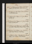Sep. 6. Su. Delamere, p. 47. Homer, v. 606. Dine at Cooke’s, w. Gent, miss Tucker & Smith; adv. Ingram. 65 / 67 ½
7. M. Delamere, p. 48, & 1 1/2 page. Homer, Lib. XVIII, v. 76: Nollekens, çala. 63 / 67
8. Tu. Delamere, p. 50. Homer, v. 150. Gore; Lettre de Cachet, p. 86. 65 / 67 ½
9. W. Delamere, p. 52. Homer, v. 224. Gore, p. 188, fin. Theatre, Recruit; adv. We. 64 / 67 ½
10. Th. Delamere, p. 54/2. Homer, v. 290: Cyril Thornton, p. 50. Call on Hudson (R S), J C Hudson, & Hume (Ireld)65 / 68
11. F.Delamere, p. 55. Homer, v. 354: C Thornton, p. 243. W sups. Museum; De la Primee. 65 / 68
12. Sa. Delamere, 1/2 page. C Thornton, p. 365. Dine at M W S’s; adv. A Curran; tea mrs Wheeler. 64 ½ / 66
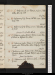Sep. 13. Su.Delamere, p. 57. Homer, v. 427: C Thornton, Vol. II, p. 228. 61 ½ / 65 ½
14. M.Delamere, p. 59/2. Homer, Lib. XIX, v. 90: C Thornton, p. 384. 62 ½ / 66
15. Tu.Delamere, p. 60/2. Homer, v. 171. C Thornton, Vol. III, p. 68. George IV reported blinde. 60 / 66
16. W.Delamere, çala; Simond. Homer, v. 240. Dine at White’s, w. Hofland: M at tea n. 61 / 62 ½
17. Th. Delamere, çala. Homer, v. 311: Great St Bernard, çala.M W S at tea. Call on Brayley(Forsyth). Mcalls. 58 ½ / 63
18. F.Delamere, çala. Homer, v. 385: St Bernard, çala{.}Museum; Eustacee. N G calls: W dines; adv. Cts, M W S & Jane.Jane C for Dresdene. 60 / 64
19. Sa.Delamere, çala. Homer, v. 454. C Thornton, p. 306. 61 / 68
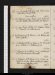Sep. 20. Su.Constipe. Delamere, çala. Homer, v. 534: C Thornton, p. 380, fin. W sups. Fine weather. 59 / 65
21. M. Delamere, 1 page. Homer, v. 604: St Leon, Vol. II, çala. Theatre, Procrastination; adv. Talfourd.e61 / 66
22. Tu. Fevere. Homer, Lib. XX, v. 72. Bulwer, O’Neile, C. I: Provost, p. 120. Seek A Curran. 60 ½ / 65
23. W.Delamere, p. 62/2. Homer, v. 143. W dines; adv. M W S. (Gallotti.) 62 / 65
24. Th.Indisposed; Rebeccae. Homer, v. 182: Provost, p. 233: O’Neile, C. II: Falkland, p. 144. 61 ½ / 65 ½
25. F.Delamere, p. 63. Homer, v. 256: Falkland, p. 264 fin. Call onRodd (adv. C Wordworth). 61 / 65
26. Sa.Delamere, p. 64/2. Homer, v. 337: O’Neile, C. III: Provost, p. 360, fin. Call on mrs Wheeler n & M W Sn: M W S au soir: sup at Reynolds’s. 59 / 64
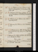Sep. 27. Su.Delamere, p. 64. Homer, v. 394: Deformed Transformed.Jerningham & Hargrave call n. 63 / 65
28. M. Delamere, p. 65/2. Homer, Lib. XXI, v. 117: Lara. Call on Jerninghamn & Northcote; adv. Hazlit, junr. W at tea. 61 / 66
29. Tu. Delamere, p. 66. Homer, v. 220. Call on F Reynolds (prints) . 57 ½ /63
30. W.Delamere, p. 67. Homer, v. 342: Borderers, p. 246. 56 ½ / 62 ½
Oct. 1. Th.Delamere, p. 69. Letter to Parkes. Homer, v. 434: Borderers, p. 299; Vol. II, p. 102. M W S & Percy dine. 57 / 64 ½
2. F.Delamere, p. 70. Homer, Lib. XXII, v. 88: Borderers, p. 311; Vol. III, p. 82. W dines. Rain, 2 days. 60 ½ / 64 ½
3. Sa. Delamere, çala. Homer, v. 141: Borderers, p. 316, fin. Cooke calls n: call on Cooke. 62 / 64
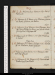Oct. 4. Su. Delamere, p. 72. Homer, v. 247: Loves of Poets, çala. 59 ½ / 66
5. M. Delamere, p. 74/2. Homer, v. 301. Museum; Giannonee. Theatre, 4/5 Romeo; adv. Wallacee. 61 / 65
6. Tu.Delamere, p. 76. Homer, v. 400. Museum; Keyslere. Dine at M W S’s, w. Percy; adv. Julia Robinson. Jerningham & Hargrave call. 57 ½ / 64
7. W. Delamere, p. 78. Homer, v. 501: Loves of Poets, çala.W dines. Heavy snow. 55 / 57 ½
8. Th. Delamere, p. 81/2. Homer, Lib. XXIII, v. 84: Sbarbuto, pp. 58. Museum; Maria Grahame. 51 / 57 ½
9. F.Delamere, p. 83/2. Homer, v. 172. Museum; Elmhirste. Sup at Jacob’s. 51 / 58 ½
10. Sa.Delamere, p. 84. Homer, v. 247. Panizzi calls: theatre, Royal Love Matche. 51 ½ / 58
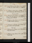Oct. 11. Su.Delamere, p. 86. Homer, v. 372: English in Italy, çala. Call onBooth, w. C C: M W S at tea. 56 ½ / 61
12. M.Delamere, 8 lines. Homer, Lib. XXIV, v. 56. English in Italy, çala. Letter to W Irving. Bentley calls. Deorsum lenitere.59 / 63
13. Tu. Delamere, p. 87. Homer, v. 144. Panizzi & Radici call: call on W Irvingn: seek La. Ca. Chas. Bury: see Bentley: call on Northcote. 60 / 63
14. W.Delamere, p. 89.Homer, v. 217. Museum: Peck & Matteie. Theatre; Epicharise. 60 ½ / 62
15. Th. Delamere, p. 90. Homer, v. 246. F R & R T call: call on Hume: seek Mackintosh. Dawe dies.52 / 61 ½
16. F.Delamere, p. 91. Homer, v. 328. M W S at tea: sup at Reynolds’s. Revise. 53 / 59 ½
17. Sa.Delamere, revise. Homer, v. 382. Call on Hodgets:Hodgets sups. 59 ½ / 62 ½
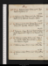Oct. 18. Su.Delamere, revise. Homer, v. 436: Hajji Baba in England, p. 60. 60 / 66
19. M.Delamere, p. 94/2. Homer, v. 547, fin. M W S dines: Rubber, C C’s, w. M W S & W. Museum; Naplese. 62 ½ / 66
20. Tu.Delamere, p. 95/2, revise. Homeri Ilias, v. 100.W Irving calls: N G at tea. Museum; Naplese. 63 ½ / 66
21. W.Delamere, 1/2 page (Bozzari). Write to Professor Smyth. Homer, v. 148: Hajji, p. 221. Museum; Naplese. 62 / 64
22. Th. Delamere, 23 lines. Homer, v. 244. Hadgi, p. 306. Theatre, Robber’s Wife; adv.M W S & 3 Robinsonse:Museum; Hereforde. 59 ½ / 61 ½
23. F.Delamere, revise. Homer, v. 344. M W S at tea. 57 / 63
24. Sa.Delamere, revise. Homer, v. 445: Ida of Athens, p. 170. 55 / 60 ½
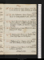Oct. 25. Su. Delamere, revise. Homer, v. 550: Ida, p. 211: Vol. II, p. 104. Call on Northcote; adv. Hazlit. 54 ½ / 60 ½
26. M.Siroc. Delamere, 6 lines. Homer, v. 611: Ida, p. 160: Book of Boudoir, çala. Lib. II, v. 34. 56 ½ / 61
27. Tu. Dawe’s Funeral, St Paul’s, w. Sir T Lawrence, Howard, J M Turner, Constable, N Carlisle, Hume, Headlands & Flather; adv. Barham & Towers: M W S at tea. 56 / 58 ½
28. W. Delamere, p. 96; revise. Homer, v. 141. Call on W Irvingn & Mn: W sups. 56 / 61 ½
29. Th.Delamere, p. 99/2. Homer, v. 206. Theatre, Shakespear’s Early Days; adv. Buckinghame. 54 / 60
30. F.Delamere, p. 101/2. Homer, v. 283: Ida, p. 266. Call on W Irving n & T Rodd: M calls. 53 ½ / 60
31. Sa.Delamere, p. 103. Homer, v. 368: Boudoir, çala. W dines; adv. Hudson. Surtout, 4 dayse. 57 / 60 ½
Nov. 1. Su. Delamere, p. 106/2. Homer, v. 440. M W S at tea; adv. W. 51 / 58
2. M. Delamere, p. 106. Homer, v. 516: Boudoir, çala. W Irving calls. 49 ½ / 54 ½
3. Tu.Delamere, p. 108/2. Homer, v. 637. Cooke calls n: call on Judkin: theatre, Snakes in Grasse. 51 ½ / 55
4. W.Delamere, p. 109/2. Homer, v. 767: Ida, Vol. III, p. 102. Revise. 53 / 58
5. Th.Delamere, p. 111/2; revise. Homer, v. 877: Bravo of Bohemia, p. 74.Museum, frustraee. 54 / 59 ½
6. F. Delamere, p. 111; revise. Homer, Lib. III, v. 64. M W S at tea: Hudson & W call. Museum; Brydone & Grahame. 55 / 59
7. Sa.Delamere, p. 112/2; revise. Homer, v. 180: Bohemia, p. 132. Call on Hudson. Enna. 55 ½ / 61
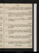Nov. 8. Su. Delamere, p. 114. Homer, v. 291: Bohemia, p. 186. Dine at Hume’s, w. Barton, mrs Stoapleton & W. 52 ½ / 56
9. M. Delamere, p. 117. Write to W Irving, w. Vol. I, ms. Homer, v. 375: Bohemia, p. 268. Call on Wrightn, Kentish Town: theatre, Romeoe. 52 ½ / 57
10. Tu. Delamere, p. 119; invent. Homer, v. 461. W calls: meet H Payne. 54 ½ / 61
11. W. Delamere, p. 121 (Taranto). Homer, Lib. IV, v. 103: Bohemia, Vol. II, p. 128. Meet H Payne:W dines:M W S at tea. 56 / 61
12. Th.Delamere, p. 123. Homer, v. 171: Bohemia, p. 220. Museum; Tanuccie: call on Mendible: sup at Reynolds’s. 58 / 64
13. F.Delamere, p. 125. Homer, v. 241: Bohemia, p. 260. Museum; Hereforde. M W S at tea: C C, ppc. 60 / 61 ½
14. Sa.Delamere, p. 127. Homer, v. 305: Bohemia, Vol. III, p. 125. Call on F Reynolds; adv. Bernal.C C for Viennae. 55 / 59
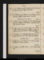Nov. 15. Su. Delamere, p. 129/2. Homer, v. 386: Bohemia, p. 259; Vol. IV, p. 82. Call on Mendiblen. 56 / 60
16. M.Delamere, p. 131/2. Homer, v. 451: Bohemia, p. 121. Museum; Vattele. W calls: call on Mendible. Cloudesley for New Yorke. 53 / 57 ½
17. Tu.Delamere, p. 133. Homer, v. 544. Museum; adv. Panizzie: Wallace calls:
theatre, Wedding Night; adv. Ayrton & Bacone. 49 / 53
18. W.Delamere, p. 135. Homer, Lib. V, v. 75. Call on C Heath; at F Reynolds: dine at M W S’s, w. Julia; tea sir John Doyle & mrs Wheeler: W sups. N G calls n. 48 ½ / 53
19. Th. Delamere, p. 138. Write to F Reynolds, leave at Heath’s. Homer, v. 143. Call on Reynolds:W calls. Fog, two days. 47 ½ / 53 ½
20. F.Delamere, p. 141. Homer, v. 203: House of Aspen. W calls, from Mott: N G at tea. 44 / 47
21. Sa.Delamere, p. 144/2. Homer, v. 285. Call on Northcote. 42 ½ / 46 ½
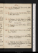Nov. 22. Su.Delamere, p. 147/2. Homer, v. 362. Call onF Reynolds, w. duplicatee. 44 / 49
23. M. Delamere, p. 149. Write to Colburn. Homer, v. 442. Call on Hudson. 47 / 51
24. Tu.Delamere, p. 151, fin. Homer, v. 505.Bulwer calls:M W S at tea: theatre, Brigand; adv. Spencere. (Snow). End of Vol. III. 47 ½ / 50
25. W.Cloudesley, revise. Write to Colburn. Homer, v. 575. W at tea. 45 / 48
26. Th.Cloudesley, revise. Homer, v. 646. Theatre, Royal Fugitivee. 45 / 49
27. F. Homer, v. 718: Bohemia, p. 178. Call on Coburn & W Irving: M W S & W dine. 46 ½ / 50
28. Sa.Cloudesley, revise. Homer, v. 777. Call on Orme (Longman’s); adv. Spottiswood - & Mn: theatre, Follies of Fashione; adv. Spencer. Go to presse. 48 ½ / 50
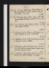Nov. 29. Su. Fog. Write to mrs Clennel. Homer, v. 863: Bohemia, p. 267, fin. Call on Booth; adv. Rowbotham: Crone calls. 50 / 54 ½
30. M.Cloudesley, revise. Homer, v. 909. Cooke calls: Surrey theatre, Becket, w. W; adv. Jerrold & C Landseere. 50 / 52 ½
Dec. 1. Tu. Cloudesley, revise. Homer, Lib. VI, v. 110. Museum; Goughe. Msups. 49 ½ / 51
2. W. Cloudesley, revise. Homer, v. 211. Museum ; adv. L Hunte: theatre, Richarde. Crone calls.49 / 52
3. Th. Cloudesley, revise. Proof. Yes & No, p. 152. Call on Hodgetsn. Write to Colburn. 50 / 52 ½
4. F.Cloudesley, 1 1/2 pages (nineteen years). Homer, v. 331: Yes & No. p. 290. Call on Uwinsn: Judkin calls: sup at Reynolds’s, w. Morton. 51 / 53
5. Sa. Cloudesley, revise. Proof. Yes & No, p. 335; Vol. II, p. 84. Call on S Hodgets: Crone calls. 51 / 57 ½
Dec. 6. Su.Cloudesley, 2 pages. Homer, v. 439: Yes & No, p. 270, fin. W dines; adv.M W S & Percy. 53 ½ / 52 ½
7. M. Cloudesley, revise. Homer, v. 529: Marriage in High Life, p. 58. L Hunt at tea. 47 / 48
8. Tu. Cloudesley, revise. Write to Colburn. Homer, lib. VII, v. 91: High Life, p. 232. Call on Bulwern. 46 / 48
9. W.Cloudesley, revise. Homer, v. 182: High Life, p. 300; Vol. II, p. 122. 44 ½ / 48
10. Th.Cloudesley, revise. Homer, v. 278: High Life, p. 308, fin. W dines. 45 / 47
11. F.Cloudesley, revise. Homer, v. 402: Collegians, p. 68. Crone calls. Theatre, Othelloe. 45 / 48
12. Sa.Cloudesley, revise. Homer, v. 482: Collegians, p. 156. W at tea. 45 ½ / 51
Dec. 13. Su.Cloudesley, revise. Homer, Lib. VIII, //111: Collegians, p. 220. W calls:M W S at tea. 48 ½ / 52 ½
14. M.Cloudesley, revise. Homer, v. 197: Collegians, p. 330: Holland Tide, p. 82. 48 ½ / 50
15. Tu.Cloudesley, revise; invent conclusion. Homer, v. 291: Holland Tide, p. 213. Meet Britton 46 / 50
16. W.Cloudesley, revise. Holland Tide, p. 244. W dines: theatre, Venice Preservede: Msups. 47 ½ / 49 ½
17. Th.Cloudesley, revise. Homer, v. 356: Holland Tide, p. 378, fin. 46 ½ / 49
18. F.Snow. Cloudesley, p. 152, 3, 4, 5.Homer, v. 424: Collegians, Vol. II, p. 60.Dine at Bulwer’s, w. Tooke: N G at tea n. & mrs Fordyce. 45 / 47
19. Sa. Cloudesley, 2 pp. (contrast, Camaldoli & Francesco). Proof. Collegians, p. 152. M W S at tea. call on Uwinsn. 44 ½ / 47
Dec. 20. Su.Cloudesley, revise. Homer, v. 483: Collegians, p. 279. W dines: Cooke calls: Uwins au soir. 44 / 47
21. M.Cloudesley, revise. Homer, v. 561: Collegians, 349: Vol. III, p. 63. M calls: Rowbotham dinesSnow. 43 /46
22. Tu.Cloudesley, revise. Homer, Lib. IX, v. 78: Collegians, p. 220. W at tea. 42 / 45
23. W.Cloudesley, revise. Homer, v. 162: Collegians, p. 322, fin. M calls: call on Colburn n. 41 ½ / 43
24. Th. Cloudesley, 1 1/2 pp. (battle). Homer, v. 246: Matilda, p. 206. M W S & Percy call. Deorsume.39 / 42 ½
25. F.Cloudesley, 1 page. (contrast, Cl. & Borromeo). Homer, v. 322: Matilda, p. 30440 / 43
26. Sa.Cloudesley, 1 page. Homer, v. 400: Matilda, p. 379. W at tea. 38 ½ / 42 ½
Dec. 27. Su.Cloudesley, revise. Homer, v. 473: Bijou, çala. F R& Bernal call: call on Colburn n. 39 / 42
28. M. Cloudesley, revise. Homer, v. 528: 3d Munster, p. 80. Hodgets au soir. Frost in bedchamber. 37 / 40
29. Tu. Cloudesley, revise. Homer, v. 568: 3d Munster, p. 306. M W S calls: sup at Reynolds’s, w. Ed. Morton. 37 ½ / 38 ½
30. W.Cloudesley, revise. Proof. Theatre, Brutus; adv. Spencer (qu. Mackintosh)e. 38 ½ / 41
31. Th.Cloudesley, 1 page. Proof. Third Munster, Vol. II, p. 132. Mcalls: W dines: call on Cooken: Cooke on M Je39 / 43
Contact --  -- Cookies/Privacy
-- Cookies/Privacy